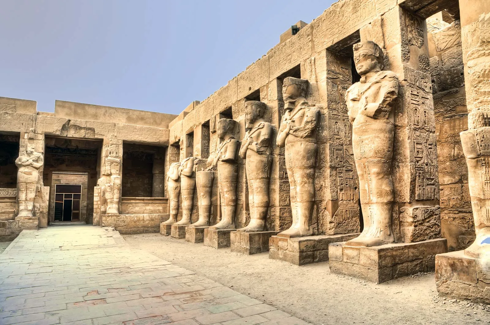

← Back to Africa
Egypt
Explore three historic landmarks from Egypt.

Pyramids of Giza
Giza
Built around 2550 BC as royal tombs for Pharaohs Khufu, Khafre, and Menkaure, these limestone monuments required tens of thousands of skilled workers and engineers. As the sole surviving Wonder of the Ancient World, they embody ancient Egypt’s mastery of astronomy and stonecraft.

Great Sphinx of Giza
Giza
Carved from a single ridge of Giza bedrock around 2500 BC with the body of a lion and the royal headdress of Pharaoh Khafre, this 73-meter guardian watches over the desert plateau. For millennia, Egyptians revered it as a solar deity.

Karnak Temple Complex
Luxor
Expanded over 1,500 years by more than thirty pharaohs, Karnak is the largest ancient religious complex ever built, anchored by a forest of 134 colossal sandstone columns. Priests, artisans, and monarchs made it the spiritual engine of New Kingdom Egypt.